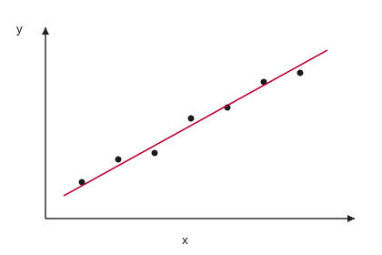
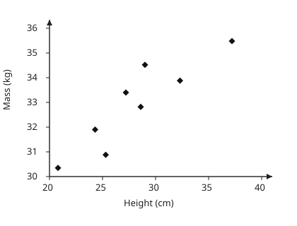

<script>if(location.hostname.endsWith('onrender.com'))location.replace('https://math-sandbox.github.io'+location.pathname+location.search+location.hash)</script>
<section class="theory" data-section="IGCSE-16.1">
<h2>16.1 Introduction to bivariate data</h2>
<p class="src">Based on Cambridge IGCSE Mathematics Core and Extended Coursebook, Chapter 16, printed pp.532–542 (introduction to bivariate data). Printed pages 532–535 were not on the local scan (parts 050–051 are missing). Printed pages 536–542 were read from part 052. Teaching of a scatter diagram, the type of correlation, and a line of best fit follows those available pages and the official books.json title. Own wording and new numbers.</p>
<p class="key-words"><strong>Key words:</strong> <em>bivariate data</em>, <em>scatter diagram</em>, <em>correlation</em>, <em>line of best fit</em></p>
<p><strong>Bivariate data</strong> are data that record two measurements for each item. A <strong>scatter diagram</strong> plots one measurement against the other. If the points tend to rise from left to right, the <strong>correlation</strong> is positive; if they tend to fall, the correlation is negative; if there is no such pattern, there is no correlation.</p>
<figure>

<figcaption>A line of best fit is drawn close to the points, following the trend, with roughly as many points on each side.</figcaption>
</figure>
<p>A <strong>line of best fit</strong> is a straight line drawn through the cloud of points to show the trend. It can be used to estimate one measurement from the other, provided the estimate is within the range of the plotted data. Estimates far outside that range are less reliable.</p>
<div class="worked-example"><h4>Worked example 1</h4>
<p class="src">Book: type of correlation, printed pp.536–542 (and the missing introduction on pp.532–535). New situation and numbers.</p>
<p>On a scatter diagram of engine size against fuel used, the points rise from left to right. What type of correlation does the diagram show?</p>
<ol class="steps">
<li>The points rise from left to right, so the correlation is positive. <span class="mark">A1</span></li>
</ol></div>
<div class="worked-example"><h4>Worked example 2</h4>
<p class="src">Book: reading from a line of best fit, printed pp.536–542. New integer numbers.</p>
<p>On a line of best fit, when \(x=4\) the value of \(y\) is 10, and when \(x=8\) the value of \(y\) is 18. The line is straight. Estimate \(y\) when \(x=6\).</p>
<ol class="steps">
<li>\(x=6\) is halfway from 4 to 8, so \(y\) is halfway from 10 to 18, and \(y=14\). <span class="mark">A1</span></li>
</ol></div>
<h3>Common mistakes</h3><ul>
<li>Calling a downward trend a positive correlation, or saying there is no correlation when a clear trend is visible.</li>
<li>Using a line of best fit to estimate far outside the range of the plotted points, without commenting that the estimate may be unreliable.</li>
</ul>
<div class="quick-check" data-q="QC1">
<h4>Quick check 1</h4>
<p>On a scatter diagram the points rise from left to right. Take the type of correlation to be 1 if it is positive, 0 if there is no correlation, and \(-1\) if it is negative. What number should be recorded?</p>
<details><summary>Show answer</summary>
<ol class="steps">
<li>The points rise from left to right, so the correlation is positive, and the number is \(1\). <span class="mark">A1</span></li>
</ol>
<p class="final">\(1\)</p>
</details>
</div>
<div class="quick-check" data-q="QC2">
<h4>Quick check 2</h4>
<p>On a straight line of best fit, when \(x=4\) the value of \(y\) is 10, and when \(x=8\) the value of \(y\) is 18. Estimate \(y\) when \(x=6\).</p>
<details><summary>Show answer</summary>
<ol class="steps">
<li>\(x=6\) is halfway from 4 to 8, so \(y=14\). <span class="mark">A1</span></li>
</ol>
<p class="final">\(14\)</p>
</details>
</div>
<div class="quick-check" data-q="QC3">
<h4>Quick check 3</h4>
<p>On a straight line of best fit, when \(x=2\) the value of \(y\) is 5, and when \(x=6\) the value of \(y\) is 17. Estimate \(y\) when \(x=4\).</p>
<details><summary>Show answer</summary>
<ol class="steps">
<li>\(x=4\) is halfway from 2 to 6, so \(y=11\). <span class="mark">A1</span></li>
</ol>
<p class="final">\(11\)</p>
</details>
</div>
<h3>Past paper</h3>
<p class="src">0580/32/M/J/20 Question 3(b) only, 1 mark, together with the official opening sentences and the official scatter diagram. Official QP and official MS. Parts (a) (plotting four further points), (c) (drawing and using a line of best fit) and (d) (a percentage from the 12 plotted points) are omitted, because they need a drawing or a complete reconstruction of every official point.</p>
<figure>

<figcaption>The official scatter diagram: some of Belle’s results for height and mass.</figcaption>
</figure>
<p>Belle records the height, in centimetres, and the mass, in kilograms, of some goats. Some of her results are shown in the scatter diagram.</p>
<p>(b) What type of correlation is shown in this scatter diagram? [1]</p>
<details><summary>Show official scheme</summary>
<ol class="steps">
<li>Positive. Official MS: Positive, B1. <span class="mark">B1</span></li>
</ol></details>
</section>
